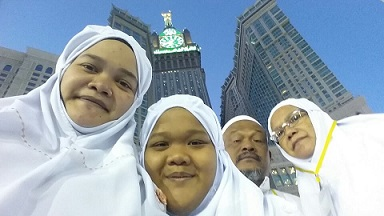

Performing Umrah with my family
On 19 December 2015, I had the opportunity to perform Umrah in Mecca and Medina with my parents and sister. This opportunity is very meaningful for me because it can be a very calm and extraordinary experience.
My first feeling of seeing the Qibla of the Muslims, the Kaaba, seemed to disbelieve that it was already in front of my eyes. I learned a lot when I was there for 2 weeks. I learned the way of life of the Arabs and the different races there. Taste the delicious food and visit the historic place.
One day, my dream is to bring all my family members together to perform Hajj or Umrah. InshaAllah.
Be an active person during high school

When I was in primary school, I was a student who did not have good academics and did not actively participate in every event.
After becoming a high school student, my academics began to improve well from form 1 to form 5. Arguably, every year I would get the opportunity to go up on stage and receive academic, personality, and co-curricular awards. From there, I began to feel confident in myself that I could also succeed and be proud of my parents who were also invited as guests on the awards day.
Form 1 and form 2
I got the best student award representing the class.
Form 3
I started activating myself in various competitions.
- Pertandingan Saintis Muda Sekolah Menengah Peringkat Daerah 2015
- Pertandingan Bicara Berirama Bahasa Melayu Sekolah Menengah Peringkat Daerah 2015
- Kejohanan Balapan Dan Padang Peringkat Daerah 2015
- Pertandingan Perbarisan Unit Beruniform Kejohanan Balapan 2015
Form 4
In 2016, I began to be less active in participating in extracurricular activities and continued to strive to improve my performance as a consistent student. It was not easy for me to achieve some success because my competition among my classmates was very challenging. Also this year I have received some awards that I am very proud of myself and able to make my parents proud of my success.
- Anugerah Sahsiah Terbaik Tingkatan 2016
- Anugerah Sahsiah Terbaik Kelas 2016
- Anugerah Murid Terbaik Tingkatan 2016
- Anugerah Kualiti Matapelajaran Sains 2016
Form 5
At the end of my year as a Form 5 student, I managed to activate myself in several competitions because my goal at the moment is to focus more on SPM. I was able to collect some certificates before I finished school.
- Johan Pertandingan Menulis Esei Kemerdekaan 2017
- Pertandingan Kuiz Teknologi Hijau 2017
- Penolong Ketua Tingkatan 5 Inovatif 2017
At the end of my high school days, I used to spend a lot of time with my classmates. The various experiences we went through together until now me and the other female friends are still together and never miss calls and conversations. Here is a video of my friends in high school and their changes now.